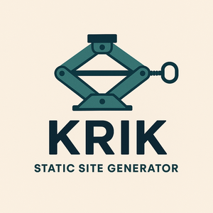

I spent the last 2-3 days developing a static site generator in Rust using exclusively Claude Code.
My knowledge of Rust is quite basic: I understand code when it’s well written but I don’t yet have the practice necessary to develop a sophisticated tool.
However, for this project I didn’t have to touch a single line of code, since I gave all the instructions to Claude. The AI even took care of the releases.
The impression I had using this tool is the same one I had in the ’90s when I saw the Internet for the first time.
I don’t think there’s anything else to add.
Oh, yes… the project can be found on github and a demo of the generated site is this page you’re reading right now.
A more complete demo of all the features can be found here.